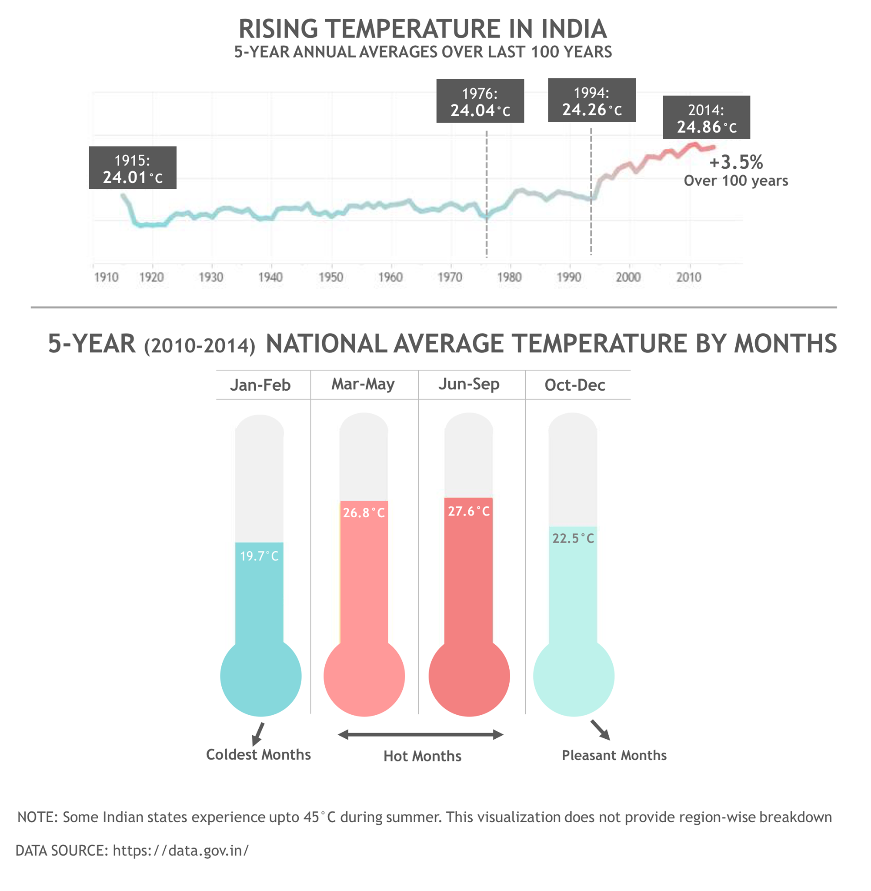

India became hotter by 3.5% (~1°C) over last 100 years, most of it witnessed in last 20 years.
National Average Temperature of India rose by 3.5% (~1°C) over the last 100 years (1915-2014).
Looking at 5-year moving averages year over year, we see that there was a significant bump in temperature post-1976 and another major rise in temperature after year 1994.
Clearly India has gotten a lot hotter in the last 20 years. What could have happened in the last 20 years, which caused this?
Some clues:
Clearly India has gotten a lot hotter in the last 20 years. What could have happened in the last 20 years, which caused this?
Some clues:
- Rise in Industrialization
- Rise in cars emitting CO2
- Rise in Deforestation